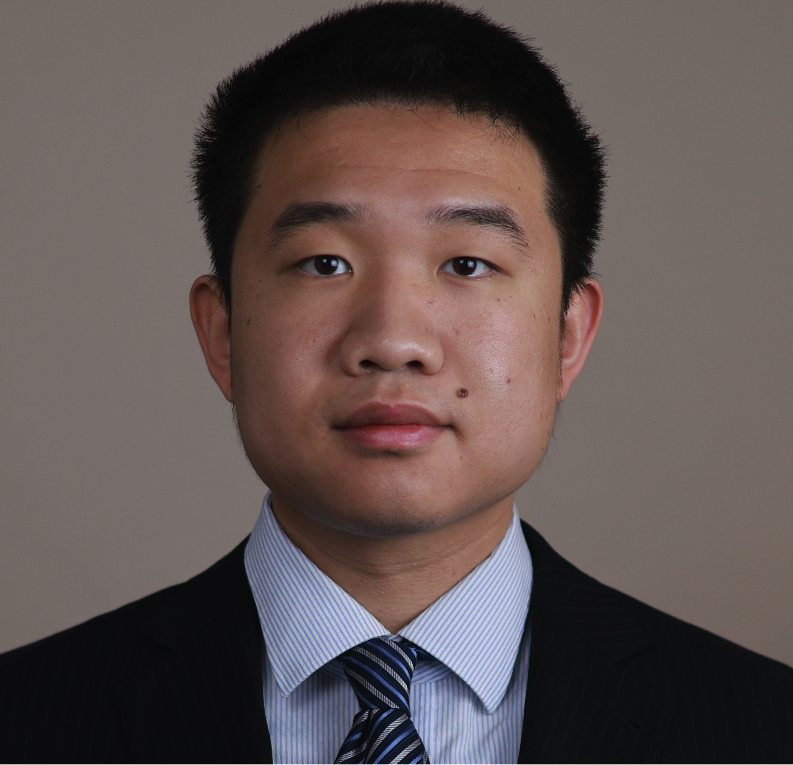

Yuhan Chen
Ph.D. Student
Computer Science and Engineering
University of Michigan
Email: cyhalek@umich.edu
Location: Ann Arbor, Michigan
About Me
I am a Ph.D. student in Computer Science and Engineering at the University of Michigan. I received my B.A. in Computer Science and Data Science from the University of California, Berkeley in 2024. My earlier research experience introduced me to the challenges of connecting computational methods with real-world scientific workflows.
My interests lie at the intersection of computer systems, AI agents, and AI for Science, particularly in designing programmable and reliable infrastructure for autonomous experimentation. My long-term goal is to develop general-purpose systems that make scientific experiments easier to specify, execute, reproduce, and improve through feedback from the physical world.
Research
I work on the software and systems foundations for AI-driven scientific discovery. Rather than focusing on a single application domain, I am interested in abstractions and infrastructure that can support many types of laboratory instruments and experimental workflows.
- Experiment-as-Code and programmable laboratories. I investigate declarative ways to describe experiments and compile them into executable workflows. This includes procedure validation, instrument and resource assignment, dependency-aware scheduling, and coordination of heterogeneous hardware. [Paper]
- AI agents for scientific workflows. I build multi-agent systems that use scientific information to propose experiments, check constraints, coordinate execution, monitor progress, and incorporate experimental results into subsequent decisions. I am especially interested in connecting language-model reasoning with dependable execution systems.
- Reliable automation and experimental data systems. I develop Python-based interfaces for instrument communication, experiment management, data storage, and visualization. Related work explores computer vision for monitoring physical processes and optimization methods for allocating laboratory resources.
Selected Publications
-
Experiment-as-Code Labs: A Declarative Stack for AI-Driven Scientific Discovery.
Zhenning Yang, Yuhan Chen, Patrick Tser Jern Kon, Tongyuan Miao, Hongyi Lin, Venkat Viswanathan, Danai Koutra, and Ang Chen. arXiv:2605.04375, 2026.
-
ElyteOS: Software for Automated Electrolyte Preparation, Measurement, and Data Management.
Yuhan Chen, Hongyi Lin, Tianyi Zhang, Adarsh Dave, Jared Mitchell, Jay Whitacre, and Venkatasubramanian Viswanathan. SoftwareX, 34, 102565, 2026.
-
SALSA: A Low-Cost Self-Driving Lab Modular Add-On for Salt Solubility Assessment for Battery Electrolytes.
Tianyi Zhang, Hongyi Lin, Yuhan Chen, and Venkatasubramanian Viswanathan. Digital Discovery, 5, 1881–1887, 2026.
Contact
Computer Science and Engineering
University of Michigan
Ann Arbor, MI, USA
Email: cyhalek@umich.edu
GitHub: github.com/yuhanchen0711
CV: Download PDF